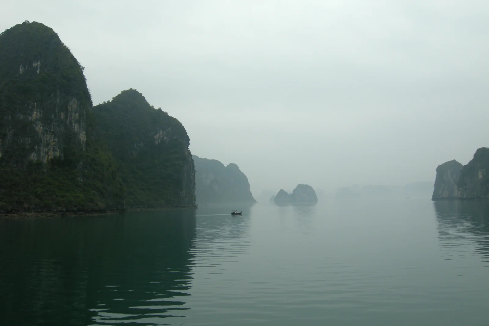
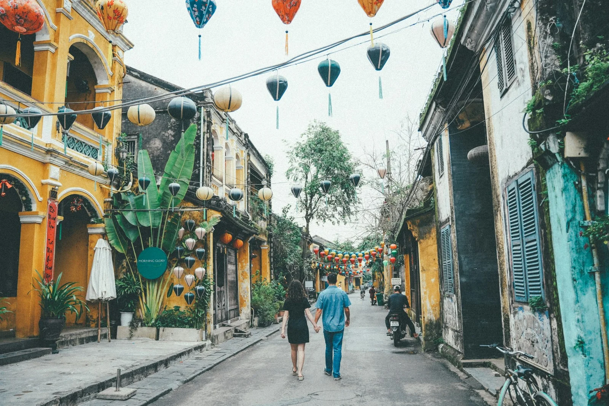
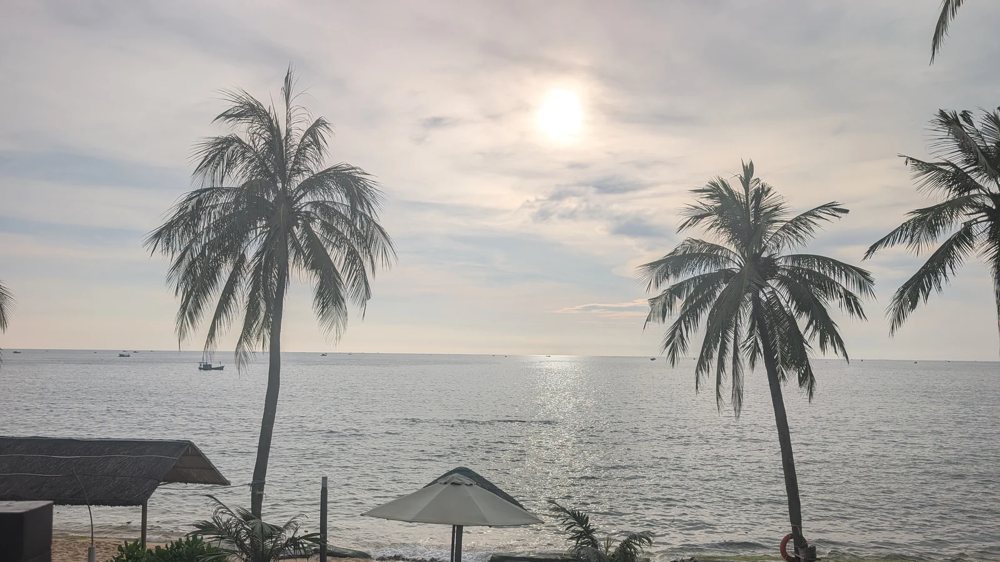

Planning a trip to Vietnam in November or December? You may need a warm jacket for misty northern mountains, proper rain protection for the central coast and light summer clothes for the tropical south — all on the same holiday. This practical Vietnam weather and packing guide explains what to expect across the three regions and how to build one suitcase that works for them all.
Vietnam stretches across several climate zones. A traveller moving between Hanoi, Sa Pa, Hoi An and Phu Quoc in late November or early December experiences markedly different conditions, even within a few days. The table below offers broad seasonal packing guidance, not a live forecast.
| Region and places | Typical feel | Priority to pack |
|---|---|---|
| North: Hanoi, Ha Long Bay, Ninh Binh and Sa Pa | Cooler days and evenings; potentially very cold, windy conditions at altitude | Removable warm layers, windproof shell and grippy shoes |
| Central coast: Hue, Da Nang and Hoi An | Mild or cool, sometimes wet and windy, with a risk of prolonged rain | Waterproof jacket, quick-drying clothes and a dry bag |
| South: Ho Chi Minh City, Mekong Delta and Phu Quoc | Warm to hot; November showers often give way to drier December conditions | Breathable clothing, sun protection and insect repellent |
Temperatures depend on the date, altitude, weather system and time of day. Broad planning ranges are around 15–25°C for lowland northern stops, 8–18°C for Sa Pa, 20–27°C for many central-coast days and 25–33°C in the south. These figures are indicative rather than forecasts or guaranteed daily averages; cold spells, rain and wind can change how conditions feel.
Hanoi and Ninh Binh often feel pleasant for walking in November. By December, especially on early mornings and evenings, you may appreciate a jumper or fleece. On Ha Long Bay and Lan Ha Bay cruises, breezes on open decks can make the air feel significantly cooler than the thermometer suggests. Mist and low clouds are part of the northern winter atmosphere.

Sa Pa is different from Hanoi. At mountain elevations, nights can be much colder. Fansipan rises to more than 3,100 metres, and its summit can be near freezing or below during winter cold snaps. Strong winds and sudden fog can make sightseeing uncomfortable without proper clothing. Do not assume the conditions at the cable-car departure station will match those at the summit.
November is part of central Vietnam's late rainy season, and wet weather can continue into December. Hue and Hoi An can see periods of persistent rain rather than just brief tropical showers. Although many days are suitable for exploring, heavy rain may affect walking tours, roads, river excursions and transfers. In periods of severe weather, follow local advice rather than insisting on a fixed sightseeing schedule.

In Ho Chi Minh City and the Mekong Delta, the weather is typically warm to hot throughout this period. November can still bring showers, while December is generally sunnier and drier. Phu Quoc is usually moving into favourable conditions for beach activities, although sea conditions and rainfall still vary from day to day.

Be cautious with marketing claims such as “reef-safe” sunscreen, which do not have a consistent global definition. Sun-protective clothing, avoiding contact with coral and following local marine rules are sensible additions to your beach routine.
You do not need three separate wardrobes. For a trip of several weeks, pack clothing that mixes well and plan to use laundry services where available. Packing for roughly 7–10 days between washes is often more practical than packing a fresh outfit for every day.
For trekking near Lao Chai–Ta Van, climbing the steps to the Mua Cave viewpoint, or walking forest paths in Cuc Phuong, traction matters more than fashionable shoes. Wear familiar footwear that you can comfortably use on uneven or slippery ground.
When entering temples, pagodas and sacred areas, a respectful default is to cover shoulders and knees. Long breathable trousers, a sleeved shirt or a lightweight shawl work across all three regions. Remove hats and shoes where requested at prayer halls and follow each site's signs and staff instructions. These are useful habits at places such as Bich Dong Pagoda, Thien Mu Pagoda and heritage shrines in Hue.
For further background, see Vietnam Tourism's etiquette guidance.
Review the weather around 48–72 hours before travelling to a new region, especially ahead of Fansipan, Ha Long Bay cruises and central-coast transfers. Mountain cloud cover, strong wind and severe rain may affect cable cars, boat operations or road access. Keep essential medication, an outer layer and rain protection in your hand luggage rather than checked baggage.
For the seasonal pattern, refer to the Vietnam National Authority of Tourism weather and climate guide. For Fansipan-specific changes in altitude and clothing, consult Sun World's Fansipan travel advice. These are planning references, not real-time warnings.
For a north-to-south itinerary, take at least one compact warm jacket, particularly if visiting Sa Pa or Fansipan. You probably will not need heavy winter clothing every day in Hanoi, but mountain wind and cold spells justify packing layers.
Not necessarily, but central Vietnam can remain wet into December, and itineraries need some flexibility. Pack waterproof gear and check local forecasts and advisories shortly before each excursion.
For many travellers, yes — provided the trainers offer grip and support for steps or trails and the sandals are secure on wet ground. More demanding treks may warrant dedicated hiking shoes.
Usually not for daytime weather. A thin outer layer can still be useful for air-conditioned transport or breezy boat rides, while sun protection and breathable clothes are higher priorities.
A route through Vietnam's north, centre and south is rewarding precisely because each region feels different. Our local team can help plan sensible connections, seasonal activities and flexible sightseeing days that fit the weather.
Explore Seven Travel